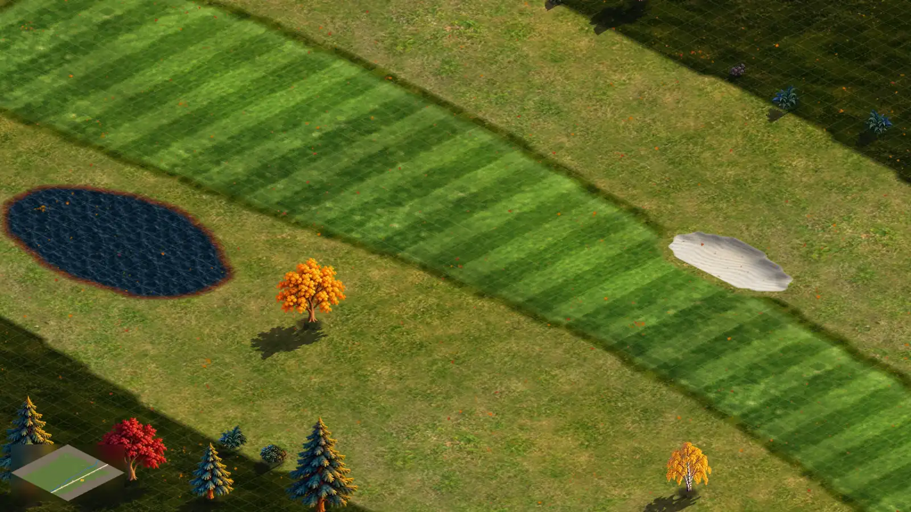

<!doctype html>
<html lang="en"><head><meta charset="utf-8"><title>P23 m8: the brush's four states</title>
<link rel="stylesheet" href="kit.css"><script src="mock.js"></script>
<style>
  .cell4 { position: absolute; width: 790px; height: 440px; overflow: hidden; border-radius: 16px; border: 1px solid rgba(255,255,255,.12); }
  .cell4 > .bgc { position: absolute; left: 0; top: 0; width: 1600px; height: 900px; }
  .cap { position: absolute; left: 12px; top: 10px; padding: 6px 12px; border-radius: 10px; background: rgba(14,15,18,.85); font-size: 14px; font-weight: 700; }
  .cap small { display: block; font-size: 11.5px; font-weight: 500; color: var(--muted); margin-top: 2px; }
</style></head>
<body><div class="stage" id="s" style="background:#111"></div>
<script>
const M = MOCK, S = document.getElementById('s');
const cam = { X: 33395.788635831224, Y: 82808.5867209195, z: 0.3, w: 1600, h: 900 }, P = M.iso(cam), TO = M.tileOf(cam);
// four views of the same background, each offset so its pointer sits in view
const views = [
  { x: 6, y: 6, ox: -620, oy: -230, ptr: [1050, 560], kind: 'ok' },
  { x: 804, y: 6, ox: -800, oy: -200, ptr: [1186, 470], kind: 'slide' },
  { x: 6, y: 454, ox: -500, oy: -150, ptr: [880, 420], kind: 'bad' },
  { x: 804, y: 454, ox: -620, oy: -180, ptr: [980, 360], kind: 'erase' },
];
for (const v of views) {
  const t = TO(...v.ptr), cx = Math.round(t[0] * 2) / 2, cy = Math.round(t[1] * 2) / 2;
  const cells = []; for (let i = -2; i < 2; i++) for (let j = -2; j < 2; j++) cells.push([cx * 2 + i, cy * 2 + j]);
  let ok = cells, red = [];
  // slides past: the cells whose centre lies on the bunker (an ellipse round its screen centre) are kept as they are
  const onBunker = ([i, j]) => { const s = P(i / 2 + 0.25, j / 2 + 0.25); return ((s[0] - 1282) / 108) ** 2 + ((s[1] - 455) / 44) ** 2 < 1; };
  if (v.kind === 'slide') { ok = cells.filter(c => !onBunker(c)); red = []; }
  if (v.kind === 'bad') { red = cells.filter(([i]) => i < cx * 2); ok = cells.filter(([i]) => i >= cx * 2); }
  // the edge of your land, for the refused view: a gold dashed line along x = cx, the far side dimmed
  const edgeLine = v.kind === 'bad' ? `<path d="${M.poly(P, [[cx - 40, cy - 40], [cx, cy - 40], [cx, cy + 40], [cx - 40, cy + 40]])}" fill="rgba(0,0,0,0.38)"/><path d="${M.line(P, [[cx, cy - 40], [cx, cy + 40]])}" stroke="#f5b52e" stroke-width="2.5" stroke-dasharray="9 6" fill="none"/>` : '';
  const a = M.cells(P, ok), b = M.cells(P, red), skip = v.kind === 'slide' ? M.cells(P, cells.filter(c => !ok.includes(c))) : null;
  const fill = v.kind === 'erase' ? 'rgba(150,120,80,0.55)' : 'rgba(110,190,70,0.6)', edge = v.kind === 'erase' ? '#ffe0b0' : '#effff0';
  const d = document.createElement('div'); d.className = 'cell4'; d.style.left = v.x + 'px'; d.style.top = v.y + 'px';
  d.innerHTML = `<div class="bgc" style="left:${v.ox}px;top:${v.oy}px"><svg class="ov">
    ${edgeLine}
    <g>${M.halfGrid(P, cx, cy, 6, '255,250,230', 0.42)}</g>
    <path d="${a.fill}" fill="${fill}"/><path d="${a.stroke}" fill="none" stroke="${edge}" stroke-width="1.8" ${v.kind === 'erase' ? 'stroke-dasharray="5 3"' : ''}/>
    ${b.fill ? `<path d="${b.fill}" fill="rgba(200,70,60,0.42)"/><path d="${b.stroke}" fill="none" stroke="#fca5a5" stroke-width="1.6"/>` : ''}
    ${skip && skip.fill ? `<path d="${skip.fill}" fill="rgba(0,0,0,0.10)"/><path d="${skip.stroke}" fill="none" stroke="rgba(70,52,30,0.9)" stroke-width="1.4" stroke-dasharray="3 3"/>` : ''}
  </svg></div>`;
  S.appendChild(d);
  const chip = {
    ok: { tex: 'fairway', wall: '#4b5a2c', l1: 'Fairway · 16 m² · $32', l2: 'hole 1 · seed: ready in 3 months' },
    slide: { tex: 'fairway', wall: '#4b5a2c', l1: 'Fairway · 9 m² · $18', l2: '7 cells kept: the bunker stays (Shift paints over)' },
    bad: { tex: 'fairway', wall: '#4b5a2c', l1: 'Fairway · 8 m² · $16', l2: '8 cells off your land · Buy land ▸', bad: true },
    erase: { tex: 'rough', wall: '#5b4a32', l1: 'Erase · 16 m² back to rough', l2: 'free · Ctrl+Z brings it back' },
  }[v.kind];
  const box = document.createElement('div'); box.style.cssText = `position:absolute;left:${v.x}px;top:${v.y}px;width:790px;height:440px;overflow:hidden;border-radius:16px;pointer-events:none`;
  S.appendChild(box);
  M.pointer(box, v.ptr[0] + v.ox, v.ptr[1] + v.oy, chip);
  box.insertAdjacentHTML('beforeend', `<div class="cap">${{ ok: '1 · Ready', slide: '2 · Slides past', bad: '3 · Partly refused', erase: '4 · Erase (hold Alt)' }[v.kind]}<small>${{
    ok: 'tint and crisp edge = exactly the cells a click paints',
    slide: 'cells it will not change show as a faint dashed outline, not red',
    bad: 'red only where it cannot go, with the reason and a fix',
    erase: 'a dashed edge and the rough colour: what you will get back',
  }[v.kind]}</small></div>`);
}
S.insertAdjacentHTML('beforeend', `<div class="title-strip" style="bottom:auto;top:430px;right:auto;left:690px">P23 mockup m8 · the brush's four states (T108 footprint + chip)</div>`);
</script>
</body></html>
